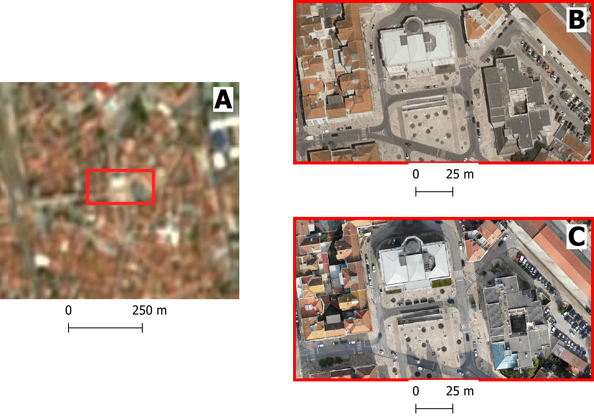

Recognize the variety of spatial data available for risk assessment and how different hazards require specific spatial, spectral, and temporal characteristics. Assess these characteristics across data types while considering additional constraints that impact data selection;
Understand what data sovereignty is and why it is important.
Note
What will you learn
In this session you will how learn to:
Search and obtain key datasets;
Evaluate the quality of a dataset with regards to its suitability for a purpose;
In geoinformatics, also called geoinformation science, we use the term spatial data to describe any type of data that can be linked to a geographic place, usually via coordinates. This means that spatial data has an unambiguous location (i.e. it can be associated to a specific location on the Planet). The classic data type is a map, a more modern one could be a satellite image (for an introduction on remote sensing see box). However, we need to consider that our work is largely done digitally on a computer, and that we might want to use data that are actually quite variable in nature. When we think about disasters or risk, we may want to include:
Tabular data or statistics (e.g. on the number of hazard or disaster events of a certain type and in a given time period);
Thematic data (e.g. a road or river network, soil types, or digital elevation models [DEMs]);
Topographic maps;
Model results (e.g. for flood hazard or slope instability);
Images (e.g. aerial photos or satellite images).
Point cloud data (LIDAR and laser scans)
In the next section we will take a closer look into different types of data.
First, it is important to distinguish between data type and data format. The first usually refers to the nature of the data, that is what type of information is the data documenting, while the latter describes what type of computer file are you talking about, including technical specifications.
Regardless of the type and format, data acquisition is done through the use sensors, surveys and other methods, after which data processing follows in order to distil useful information. We will not do an exhaustive list of data acquisition and processing methods, still, Fig. 1 provides an overview of the most relevant data types for Disaster Risk Management.
For example, you might find statistics presented in a table with either coordinates or grouped per administrative area, or illustrated as a chart or graphic. It can also happen that field photographs are available. Associating those with the other data, and integrating the information you think is useful in those photos with the rest of the analysis, can be challenging. Also consider that many maps or aerial photographs are available only as paper hardcopies. To use them in our work we first have to convert them to a digital format. This can be done by digitizing relevant information, or by scanning and subsequently georeferencing the maps or images.
Some of the data types mentioned in the diagram of Fig. 1 deserve a closer look due to their importance for Disaster Risk Management. Among all the data types, those acquired through remote sensing deserve especial attention - if you want to dive a bit more into what exactly it is remote sensing, we invite you to expand the What is remote sensing dropdown.
What is remote sensing?
Remote sensing (RS) can be described as the process of making measurements or observations without direct contact with the object being measured or observed. Thus, while in the geoinformatics context satellites often come to mind, even amateur photography is a form of RS. It usually results in images, but also includes other measurements, such as of temperatures or gravity.
Sensors and platforms. For remote sensing we normally require a sensor (i.e. a camera or scanner), but also something that carries the device. Such platforms can be airplanes or satellites, but also other instruments that allow us to place the sensor so that the area or object of interest is exposed, such as balloons or kites. The choice of platform directly affects what we can observe and how. Airplanes and helicopters are flexible in their operation, and by flying relatively low provide good spatial detail. However, such surveys can be expensive and regular imaging of the same area thus costly. Satellites fly on a fixed orbit, and are thus less flexible, but can provide data at regular intervals (think of trains on a track). We distinguish between so-called polar orbiters, whereby the satellites continuously circle the Earth at an altitude of some 500- 900km, passing over or near the poles. Normally only a relatively narrow strip of Earth underneath the sensor is observed. Modern satellites can also point the sensor sideways for greater flexibility. The other class of satellites is positioned in geostationary orbit. This means that the satellite is always directly above a designated place on the equator, moving with the rotating Earth at an altitude of 36,000 km. At that height the sensor can usually observe an entire hemisphere (the side of the Earth facing it), and provide data at any desired frequency. Many weather and communication satellites fall in this category, while most Earth observation satellites are polar orbiters.
Collecting information. The data we obtain depend primarily on the sensor type, just like you might take color or black/white photos with your camera. The secret to taking such different photos lies in the electromagnetic energyFig. 2, which is what our sensors can detect. The most common source of energy is reflected sunlight, which, as you probably know, contains visible light, but also ultraviolet (UV), infrared (IR), thermal and other energy (Figure 2.1). Which part of this continuous energy band we capture depends on the sensor. Your camera might only capture visible light, while others can “see” UV, IR or thermal energy.
The data. The data our sensors record typically have the form of a grid, or raster. Rows and columns in that grid are populated by cells. These cells contain the information recorded by the sensor. A sensor can also have several bands, meaning that different sections of the electromagnetic spectrum are observed Fig. 3. Thus for the area observed we will have an image that contains several bands, and the cell corresponding to a small part on the ground will have one data value for each band. The most important point to understand here is that different materials on the ground reflect energy in a characteristic spectral pattern. For example, vegetation is characterized by high energy in the near infrared (NIR), while for water the energy is very low. In figure 2.2 this would result in high values (digital numbers [DN]) for vegetation and low values for water in the band corresponding to the NIR.
Displaying an image. Once we have our data we can either display them directly on our monitor (if they are already digital), or first scan them. A monitor works with 3 different color channels (blue, green, red), and is able to generate any color (including black and white) with a combination of those 3 colors. Thus we can take an image with only 1 or with several bands and display 1 band at a time, thus as a pan-chromatic image Fig. 4. We can also use 3 bands and display them as a so- called true-color composite (B), which looks like the scene would look to us from space. However, we can essentially assign any of the image bands to one of the 3 colors. A typical combination, called a false-color composite, is shown in C, where the information from the NIR band is displayed in red. Recall that vegetation leads to high DN values in the NIR, hence the high vegetation signal leads to a
Fig. 4 A – panchromatic, B- true-color, C and D – false color composites#
Enhancing an image. Sometimes, for information to be made more visible, we have to enhance the image. One typical form is stretching. Our displays are typically able to display 256 brightness levels for each color, corresponding to 8bit. However, very often the image data only have a limited range, say with DNs between 50 and 150, where are not very bright or very dark features on the ground. To achieve a display with a richer contrast we can stretch the data over the entire available range (0-255). The same concept applies to other data types you will work with, for example elevation. The elevation file for our test area ranges between approximately 900 and 1350m. By default they will be stretched over the available display range. However, we can also stretch a small value range, say 950-1000, to highlight more details. Another common enhancing method is filteringFig. 5. This is a so-called neighborhood analysis, often used to smoothen an image or to highlight edges. In the example the average of all cells shown in grey in the input image is calculated and written to a new file, before the filter template moves to the next pixel (hatched box). Many filter types have been developed, which you will also use in the ILWIS exercises (for example shadow and smoothing filters).
Fig. 5 Input and output result of filtering: In this case, a smoothing filter was applied.#
Other factors influencing our data. RS data come in many forms, often described by sensor type, as well as spatial, temporal and spectral resolution. Sensors recording reflected sunlight or energy emitted by the earth are called passive sensors. However, we also have sensors that emit their own energy, which is reflected by the earth, just like you use a flash on your camera. These are active sensors, well-known examples being radar (see Figure 2.10) or laser scanning. The spatial resolution describes the size of the ground area represented in a single pixel. This largely depends on the distance between the sensor and the object. While aerial photos may have a resolution of a few cm, data from polar orbiters range between about 50 cm and 1 km per cell. Sensors on geostationary satellites, being very far away, record data at resolutions of a few km. The temporal resolution describes the possible frequency of repeat observations. For aerial surveys this can be years. Depending on the type of polar orbiter and sensor, their temporal resolution varies between approx. 1 and 44 days, while geostationary sensors record data up to every 15 minutes. The spectral resolution describes how narrow a slice of the EM spectrum a sensor band records.
Digital Elevation Models (DEM) consist of a single band image where the pixel value represents the elevation of that location Fig. 6. They are a fundamental and indispensable dataset for many applications because there are many other informations that can be derived from it, especially when it comes to hydrology. In fact, delineation of catchment areas, streams, flood simulations cannot be done without a DEM as input.
Fig. 6 DEM of the Savalan Peak (Iran) based on SRTM data#
DEM are also essential for all sort of landscape analysis for their unique ability to provide an intuitive reading on the main features of an area: where are the mountains, the valleys, the flat areas and so on Fig. 7:
Fig. 7 3D visualization of the DEM of the Savalan Peak (Iran) based on SRTM data#
Land Cover maps are a form of thematic data where the map is made of mutually exclusive categories that are defined according to the prevalent land cover.
For example, a land cover map with four categories could include water, green area, dry area, and urbanized. Land cover maps are often confused with land use maps, and the two terms are mistakenly used interchangeably. Land cover refers to the actual physical surface of an area—what dominates the landscape :numref:land_cover_enschede.
In contrast, land use maps document how people utilize the land. For instance, green area describes the land cover, but park is a land use category, not a cover type.
Fig. 8 Land cover map of Enschede (The Netherlands) based on Sentinel 2 imagery (2016)#
Land cover maps are typically produced by classifying multi-spectral satellite imagery using a range of machine learning and supervised classification techniques. These methods aim to cluster pixels based on radiometric similarity. The accuracy of the classification is then assessed by evaluating whether the assigned categories correctly match the actual land cover.
The more localized a land cover map is, the more accurate and representative the land cover classes tend to be. However, there exists land cover maps at global scale that might be useful even when used for large scale mapping. See for example Worldwide land cover mapping
Land Cover Indices are derived from remotely sensed data, primarily multi-spectral satellite imagery, and are expressed on a numerical scale, typically ranging from -1 to 1. Higher values indicate a greater likelihood that the physical characteristic measured by the index is present. These indices are widely used in environmental monitoring, agriculture, urban planning and may also be very useful for disaster risk managing. Indices allow us to analyze vegetation, water bodies, soil, and built-up areas.
A few of these indices are very commonly used:
Normalized Difference Vegetation Index (NDVI) – Measures vegetation health and density. Defined as:
\[NDVI = \frac{(NIR - RED)}{(NIR + RED)}\]
Normalized Difference Water Index (NDWI) – Indicates the presence of water on the surface (water bodies).
\[NDWI = \frac{(GREEN - NIR)}{(GREEN + NIR)}\]
Representing physical characteristics as an indice is a very useful indicator that also allows for a fast and intuitive assessment of complex phenomenon Fig. 9. There are many indices built on top of remote sensed imagery, you can check this page for a list of indices
Fig. 9 NDVI (A) and NDWI (B) indeces for the Sistan Basin, in Iran, as of January 2005.#
Despite the increasing availability and quality of satellite imagery, mounting a photographic camera on an aerial vehicle is widely used and covers use cases for which satellite imagery is not the best option. In simple terms, if small object recognition is a requirement, then we need imagey that is suitable for small scale mapping.
The biggest difference between satellite and aerial and drone imagery is the spatial resolution that is higher in the latter Fig. 10. Commercial satellites offer spacial resolutions, for True colour of up to 3m while with aerial and drone photography we can have imagery with centimetric spatial resolution.

Fig. 10 Imagery documenting Caldas da Rainha, Portugal: (A) Sentinel-2 satellite imagery with a spatial resolution of 10m; (B) a highlighted section of the city captured in aerial photography with a resolution of 10cm; (C) the same highlighted section using drone imagery at 2cm resolution. Notice how the detail increases.#
Aerial photography is usually comissioned by national agencies to obtain a detailed based map for the whole country or a particular region, while drone imagery, due to the logistic challenge of scaling it up to large areas, is usually applied to cover localized areas like a development plan or a particular part of a city.
Radar data is obtained from active remote sensing satellites that emit energy waves in the microwave region of the electromagnetic spectrum toward the Earth’s surface. These waves then bounce back after interacting with the surface. By analyzing the time delay and characteristics of the returning signal, it is possible to distinguish surface features and objects once the data is processed into an image.
The main advantage of radar data—such as that provided by Synthetic Aperture Radar (SAR) sensors onboard the Sentinel-1 satellites—is that meteorological conditions like cloud cover do not affect data quality. This is in contrast to optical sensors, which depend on clear skies to capture usable imagery. Therefore, radar is an extremely valuable tool for near real-time monitoring of hazards commonly associated with cloud coverage, such as floods Fig. 11.
Fig. 11 Example of radar imagery showing water (depicted by dark pixels). The image compares the same region in April 2016 (pre-flood event) to the peak of the flood in August 2016. Cloud coverage did not impede the acquisition of useful imagery.#
LiDAR or Light Detection and Ranging is also an active remote sensing system that can be used to generate very high resolution (in other words, detailed) Digital Elevation and Digital Surface Models Fig. 13
Difference between DEM and DSM
Although DEM (Digital Elevation Models) and DSM (Digital Surface Models) are often mentioned interchangeably, they have slightly different meaning:
DEM Is a representation of the topography without any other features like constructions or trees. It represents the height of ‘bare earth’ only Fig. 12.
DSM In turn, is a representation of the topography that includes features that are on the ‘bare soil’ like houses and vegetation Fig. 12.
Fig. 12 Same area as a DEM (A) and DSM (B). Note how the DSM is representing the top of the trees and that reflects in the elevation values#
Fig. 13 DSM of the Neštich hillfort above Svätý Jur (Slovenia) made from LiDAR data (2016)#
LiDAR data acquisition is performed using a laser beam, typically mounted on an aircraft. The laser “fires” pulses toward the Earth’s surface, with point densities typically ranging from 1 to 100 points per square meter. Higher point densities provide more detailed data but also require more intensive processing.
The collected data forms a point cloud consisting of millions of points, each represented by XYZ coordinates. These coordinates are determined by measuring the time it takes for the laser beam to reach an object and reflect back to the sensor.
One particularly interesting application of high-density point clouds is their ability to penetrate vegetation and capture multiple layers of information. This allows for the identification of different levels, such as bare soil, intermediate vegetation, and the top of the tree canopy Fig. 14.
Fig. 14 Animation illustrating the level of detail collected with a LiDAR sensor mounted on an airplane#
Topographic maps are the result of surveys using traditional optical survey methods like total stations and theodolites, but nowadays, these surveys are typically assisted by GPS measurements and can be complemented with other aerial imagery or even LiDAR and other sensors.
Topographic maps include two big groups of information: man-made structures like roads and buildings and natural features with a great emphasis on altitude measurements that are on the base of terain representations and the deliniation of landscape features like ridges, valleys and water bodies Fig. 15
Fig. 15 Detail of a topographic map the Tehachapi Mountains (California, USA). Section of “The National Map” by USGS#
Modern topographic maps are actually a composition of several distinct datasets that were acquired using a myriad of different techniques, however in many countries old paper based topographic maps continue to be a precious source of information.
When a map is made of a a subset of of topographic elements in order to document a specific theme, we call it a ‘thematic map’. Common thematic maps include natural features like geology Fig. 16 or man-made elements like communications and cadastral maps (or other delimitations) Fig. 17.
Fig. 16 Thematic map of the geology from the peninsula of Peniche (Portugal)#
Fig. 17 Thematic map of the land parcels and roads from Dorset (Tasmania)#
Volunteered geographic information (VGI) is a term used to denote spatial data is produced by volunteers with the explicit purpose of contributing to larger mapping project. The information produced this way is usually used as an addition or improvement to a reference map or as an element depicting a particular event for which the volunteers were mobilized such as campaings to map affected areas after an hazard.
The most well-known example is Open Street Map (OSM)Fig. 18, a project initiated in 2006 with the explicit objective of building a map of the entire world under a permissive use license. Nowadays, OSM does not rely solely on data produced by volunteers, but the OSM mapping community continues to play a crucial role—especially in data-poor contexts.
Another interesting source of data is that produced in the context of social media applications. Most social networks provide an Application Programming Interface (API), which is essentially a collection of methods that allow for exploring and retrieving (anonymized) data published on a social networking platform.
These services are usually behind a paid subscription or offer very limited functionality in their free versions, but they can be a valuable source of data for investigating people’s behavior before, during, and after a disaster.
For example, researchers have used Twitter data to understand the extent to which citizens of Jakarta, Indonesia, utilize government-designated shelter facilities during a flood, as opposed to seeking shelter with family, friends, or other (perceived) safe locations Fig. 19.
Fig. 19 Type of shelters sought by citizens during the 2014 flood in Jakarta (excerpt) based on Twitter data. Adapted from da Silva Mano (2018) [1].#
Census data is information about a population. Based on it, a series of statistical indicators can be established to construct a socio-economic profile of the population of a country, a region, or a city. Historically, population censuses aimed to count the number of inhabitants to allow more efficient tax collection and military drafting.
Nowadays, population censuses are much more than that and are an essential source of information for planning prevention and mitigation policies Fig. 20.
Fig. 20 Map showing population change from 2010 to 2020, based on data from the 2010 and 2020 censuses. Accurate population counts are essential to reliably measure these changes.#
Population data is typically collected by national agencies with a specific mandate, often starting at the household level and then aggregated into larger units such as neighborhoods, districts, or regions. However, due to a range of complex challenges—such as limited resources, logistical constraints, or political instability—not all countries are able to conduct systematic population surveys at the household level. In such cases, estimates based on larger aggregation units serve as the best available proxy for understanding population distribution.
A good example of this approach is the WorldPop project. WorldPop provides gridded population datasets derived from a combination of census data, satellite imagery, and statistical modeling, offering valuable insights for countries where detailed household-level data is unavailable Fig. 21.
Fig. 21 A visualization of WorldPop population estimates (100x100m grid cells) for Iku Island, Lake Kivu (Democratic Republic of the Congo), as of 2020.#
In an increasingly connected world, the ability to collect and relay data in near real-time is becoming ever more feasible. This is achieved through a vast array of sensors that transmit readings via networks—most commonly over the internet using the HTTPS protocol. These sensors come in many forms and can be used to monitor human activities, such as traffic volumes, or more frequently, environmental indicators like temperature, air quality, wind speed, and more Fig. 22.
Fig. 22 Example of air temperature data collected by a sensor installed in Zanzibar, Tanzania. The data is visualized using the OpenSensorWeb portal.#
The data collected by sensors can be used to feed data portals, such as the one shown in Fig. 22, but it can also be distributed in raw format—either via APIs or through direct downloads in tabular formats Fig. 23.
Fig. 23 The the data behind the visualization in Fig. 22 but as a table, suitable for using with third party applications.#
Most of the data types described in the previous section are made available through data portals. These portals may operate at regional, national, continental, or global scales, depending on the mandate and policies of the responsible institutions.
In the table below, we provide a reference list of data portals with global or continental scope. While the list is not exhaustive, it includes essential resources—platforms that are also highly valuable for work at national or local levels.
A catalog of (mostly statistical) health-related data
Large data portals, such as those operated by NASA or the United States Geological Survey (USGS), provide access to a wide range of satellite imagery, including global Digital Elevation Models (DEMs) like SRTM and ASTER.
To make the most of these resources, it is important to understand the key characteristics of the sensors used to acquire the data, enabling more informed decision-making. Catalogs of sensor specifications, such as the one provided by ITC, can also serve as a valuable reference.
The importance of global and regional datasets is particularly pronounced in low- and middle-income countries or fragile states, where national data systems often face challenges such as limited coverage, outdated information, or concerns about reliability and consistency. In these contexts, regional and global data sources can serve as valuable supplements (or even proxies) that can help to fill critical information gaps and enhance data accuracy.
Data sharing and dissemination with OGC webservices
^^^^^^^^^^^^^^^^^^^^^^^^^^^^^^^^^^^^^^^^^^^^^^^^^^^
Data sharing and dissemination involve the process of publishing and distributing data. This can be achieved through direct downloads, as is the case with some of the global data providers mentioned earlier, or by enabling web services that seamlessly publish data using open standards.
For spatial data, the most common (geo) web services are those defined by the Open Geospatial Consortium (OGC). Among the many standards maintained by OGC, the most widely used are the Web Map Service (WMS) and the Web Feature Service (WFS). The WMS is designed to publish spatial data as static images, while the WFS provides access to spatial data as features—geometric objects such as roads, buildings, or administrative boundaries, along with their associated attributes.
The WFS specification is better suited for integration within external data analysis workflows, as it allows direct interaction with the data. In contrast, the WMS focuses solely on data visualization, making it ideal for creating maps but less practical for detailed analytical purposes.
However the critical characteristic of OGC webservices is that they allow data interoperability. Once a dataset is published using one the OGC specifications, it can be consumed by any client application (desktop GIS, either proprietary or open source, web applications, mobile applications, etc).
EXERCISE: explore WMS services with a basic web map client#
In order to use webservices, we need to know the address (i.e. the URL) of the service. In the table below, we provide a list to WMS services.
To explore the data provided by these servives, simply follow the instructions.
You can experiment with OGC-compliant web services (WMS/WFS) using the interactive web map client application provided below. Follow these steps:
Copy the URL: Select one of the GetCapabilities URLs from the collection of global datasets suggested earlier.
Paste the URL: Enter the URL into the WMS/WFS Layer Loader input box in the application.
Load Service: Click the Load Service button. The available layers from the service will appear in the layer list.
Add Layers to the Map: Check the box next to the layer(s) you want to display on the map.
Interact with the Map:
Once you’ve added at least one layer, click on the map to query the location’s attributes.
The queried attributes will be displayed in the Feature Info panel next to the layer list.
The layers you add and the attributes displayed depend on the data provided by the selected WMS or WFS service.
Feel free to explore how different datasets describe the world and interact with them to understand the attributes of specific locations.
Enjoy experimenting with global geospatial data! 🌍
WMS Layer Loader
No layers loaded yet. Enter a service URL and click "Load Service".
Click on the map to view feature information.
Note
You can use this web map application in a dedicated tab for a larger view or use in fullscreen mode.
Web services provide an efficient and flexible way to explore and analyze data without the need to download it or install specific software. Thanks to their focus on interoperability, the same URLs you used in this exercise can seamlessly integrate with various GIS software, applications, or workflows, enabling you to harness their capabilities across different platforms.
Data quality is often misunderstood as being synonymous with perfect data. While this assumption is understandable, it’s not a constructive way to think about what data quality really means.
A more useful approach is to define data quality in terms of fitness for purpose. In other words, a dataset may be perfectly suitable for one application but inadequate for another. Assessing data quality, therefore, requires us to consider the context in which the data will be used.
To evaluate whether a (spatial) dataset meets the necessary quality standards, we first need to define the ideal requirements. This can be done by answering a few guiding questions:
What is the scale of the analysis? → related to scope
What level of detail is needed? → relates to granularity and accuracy
What type of information is required? → relates to completeness
How current or frequent must the data be? → relates to temporal resolution
Once we have clear answers to these questions, we can compare them with the characteristics of available datasets and assess how well they align. This evaluation is made easier by understanding a few key concepts:
Scope refers to the geographical, thematic, and temporal coverage of a dataset.
Example: A land cover map of Ethiopia for the year 2020.
Granularity describes how fine or coarse a dataset is.
Example: Population figures at the municipal level are more granular than those at the regional level.
Accuracy can refer to spatial, temporal, or thematic precision.
Example: A satellite image with 10m resolution provides more spatial detail than one at 50m.
Completeness reflects how much of the expected data is actually present.
Example: A temperature dataset covering 8 regions is incomplete if data for some days or districts is missing.
Temporal resolution indicates how frequently data is updated or captured — a key factor in disaster risk management.
Example: A satellite with a 7-day revisit cycle is more likely to capture images close to the time of a flood or earthquake.
UNDRR’s data quality guidelines on disaster risk data management#
In the particular case of Disaster Risk Management, the assessment of data quality is often done in the scope of Effective Early Warning Systems (EWS). These systems depend on sufficiently available and high-quality data to ensure accurate risk assessments and timely warnings. Cai and Zhu (2015) [2] identify five dimensions of data quality that align closely with the main criteria for data sufficiency in EWS, as detailed by United Nations Office for Disaster Risk Reduction (UNDRR)’s guide on disaster risk data management[#]_.
Availability
Effective Early Warning Systems (EWS) depend on accessible, timely, and up-to-date data.
Real-time or near-real-time datasets are crucial to accommodate rapidly changing risks,
ensuring actionable warnings without delays.
Reliability
Data must be accurate, consistent, complete, and validated regularly. This ensures
comprehensive coverage of hazards, exposure, and vulnerable groups while maintaining
consistent collection methods over time.
Fitness
Relevant and sufficient data tailored to specific hazards is key. Spatial and temporal
resolution must match the disaster’s nature, with redundancy ensuring alternative sources
in case of primary data failure.
Security, Privacy, and Ethics
Ethical data management must comply with privacy, transparency, and ownership laws.
Applying the “do no harm” principle safeguards vulnerable populations and ensures data
serves its intended purpose responsibly.
Data sovereignty is an increasingly important concept in the digital age, especially as a critical element of national and organizational security. In simple terms, data sovereignty refers to the extent to which data is subject to the laws, regulations, and governance of a particular country or jurisdiction.
This issue is particularly relevant in the context of disaster risk management, where data is an essential resource. Without timely and unrestricted access to key datasets, risk assessments and emergency responses can be delayed or compromised. Restrictions on access or usage—whether financial, legal, or technical—can have severe consequences during crises.
Closely linked to data sovereignty is the issue of licensing. Understanding the license attached to a dataset is essential for determining how the data can be used. In some cases, the licensing terms may not align with national laws or may impose restrictions that limit the intended use of the data. This can trigger the need for a contingency plan to ensure operational continuity.
Licensing models can generally be grouped into two broad categories:
Open licenses, such as Creative Commons, which encourage sharing, reuse, and redistribution.
Proprietary licenses, which often restrict the use, redistribution, or modification of data—especially for commercial or external applications.
A less obvious but significant form of data sovereignty risk stems from the use of proprietary software. Many proprietary systems rely on data formats that are not interoperable. As a result, accessing or fully using the data may require a valid license for the specific software that supports those formats. This dependency can limit flexibility and increase costs in the long run.
Incorporating Data Sovereignty into preparedeness planning#
Evaluating licensing and sovereignty-related constraints should be a standard part of any data management and risk planning strategy. Ensuring that critical data is accessible, legally usable, and interoperable is key to strengthening resilience and preparedness in disaster risk management.
Use this 17-question single-choice quiz to test your knowledge. Each question has only one correct answer. Your results will be displayed upon completing the final question.
# Spatial Data
What distinguishes spatial data from other types?
- [ ] It lacks geographical information.
- [x] It is associated with a specific location or coordinates.
- [ ] It cannot be represented in a table.
- [ ] It is always collected manually.
# Remote Sensing
Which is a key feature of remote sensing?
- [ ] Data is always collected by individuals on-site.
- [x] Data is obtained without physical contact with the area.
- [ ] It only involves visible light imagery.
- [ ] It is not useful for large-scale observations.
# Digital Elevation Models (DEMs)
What do Digital Elevation Models (DEMs) typically represent?
- [ ] Land use patterns.
- [ ] Soil types.
- [x] The elevation or terrain height of an area.
- [ ] Population density.
# Land Cover Maps
What is the primary purpose of a land cover map?
- [x] To represent the physical material present on the Earth's surface, such as vegetation, urban areas, or water bodies.
- [ ] To display topographic elevation details of a region.
- [ ] To provide historical weather patterns over time.
- [ ] To calculate soil moisture content.
# Land Cover Indices
What do land cover indices typically measure?
- [ ] The total population in a region.
- [ ] The atmospheric conditions like temperature and humidity.
- [ ] The depth of water bodies.
- [x] The quantitative characteristics of land cover, such as vegetation density or soil quality.
# Aerial and Drone Photography
What is a significant advantage of using drone photography compared to traditional aerial methods?
- [ ] It provides higher altitude coverage than satellites.
- [x] It allows for more flexible, low-altitude imaging in specific areas.
- [ ] It requires no human operation or oversight.
- [ ] It can only capture images during daylight.
# Radar Data
What is a key advantage of radar data in remote sensing?
- [x] It can capture data regardless of weather conditions or time of day.
- [ ] It is only useful for observing vegetation.
- [ ] It requires clear skies to function effectively.
- [ ] It is limited to short-range observations only.
# Point Cloud Data
How is point cloud data generally collected?
- [ ] By manually measuring distances on a map.
- [x] Using LIDAR or other scanning technologies.
- [ ] By analyzing photographs.
- [ ] Through statistical surveys.
# Topographic Maps
What information do topographic maps primarily provide?
- [ ] Thematic data like vegetation cover.
- [x] Elevation and landform details.
- [ ] Aerial imagery.
- [ ] Statistical population data.
# Thematic Data
What is a defining characteristic of thematic data?
- [ ] It is only numerical data.
- [ ] It has no spatial reference.
- [x] It represents specific themes, such as land use or the road network.
- [ ] It is always displayed in 3D models.
# Volunteered Geographic Information (VGI)
What is a defining characteristic of Volunteered Geographic Information (VGI)?
- [x] It is collected by individuals or communities voluntarily contributing data.
- [ ] It is exclusively collected by government agencies.
- [ ] It only includes data from satellite imagery.
- [ ] It requires the use of specialized remote sensing equipment.
# Social Media and Media Repositories APIs
What is a common use of APIs from social media and media repositories in data collection?
- [x] To access large volumes of user-generated content for analysis.
- [ ] To manually upload geographic data collected in the field.
- [ ] To exclusively create visual maps without any data input.
- [ ] To replace all traditional forms of data collection permanently.
# Census Data
What is a primary characteristic of census and statistical data?
- [x] It provides structured demographic and socioeconomic information collected at regular intervals.
- [ ] It is always unstructured and collected spontaneously.
- [ ] It only contains spatial coordinates without additional attributes.
- [ ] It is mainly used for satellite image processing.
# Sensor Data
What is a typical feature of sensor data?
- [x] It is collected automatically by devices measuring environmental or physical conditions.
- [ ] It is always manually recorded by field surveyors.
- [ ] It consists only of photographic images.
- [ ] It cannot be used in real-time monitoring systems.
# OGC Web Services
What is the main purpose of OGC (Open Geospatial Consortium) web services?
- [x] To provide standardized protocols for accessing and sharing geospatial data over the internet.
- [ ] To encrypt all geographic data before sharing.
- [ ] To create physical copies of maps for distribution.
- [ ] To limit access to geospatial data to private organizations only.
# Evaluating Data Quality
When assessing the quality of a dataset for disaster risk management, which factor is least important?
- [ ] Accuracy of the data
- [ ] Timeliness of data collection
- [ ] Relevance to the specific hazard being studied
- [x] The aesthetic appeal of the data presentation.
# Data Sovereignty
What does data sovereignty refer to?
- [ ] Data must always be shared globally without restrictions.
- [ ] Data must be encrypted at all times.
- [x] Data is subject to the laws and policies of the country where it is collected.
- [ ] Data is owned by the organization that processes it.
The aspects of data quality, data sovereignty, and data licensing briefly addressed in the previous sections constitute critical elements of a data ecosystem for a country, region, or organization.
A data ecosystem can be defined as “The people and technologies collecting, handling, and using the data and the interactions between them” [3].
In the context of disaster risk management, the data ecosystem places great emphasis on preparedness—that is, the ability to access quality, up-to-date (and updatable) data in a timely and fully interoperable manner among stakeholders and communities.
Assessing the level of preparedness of our data ecosystem can be a complex exercise that goes beyond the aspects of licensing, interoperability, and data quality discussed earlier. It requires a comprehensive assessment of additional elements and should be conducted as part of a preparedness plan.
The assessment of the level of prepardness of a data ecosystem can be performed using the Data Ecosystem Maturity Assessment Framework[4] developed by 510, along with the Data Maturity Assessment Matrix.
The Data Maturity Assessment Matrix is a diagnostic tool designed to evaluate the development of a data ecosystem across four key dimensions, each assessed along five levels of maturity. Within each dimension, specific indicators help gauge progress. Stakeholders with in-depth knowledge of the national or regional data ecosystem are invited to assess each indicator, determining its current level of maturity. This process helps identify strengths, gaps, and opportunities for improvement in data governance and use.
The table below provides a simplified version of the Data Maturity Assessment Matrix. The descriptions of the phases have been simplified, and the list of indicators for each dimension has been omitted. The descriptions of each phase within a dimension are adapted from the detailed indicators in the full matrix and are phrased to suggest what a general indicator might be. For the full matrix, please refer to the Data Maturity Assessment Matrix
Embedded in workflows; informs cross-sector decisions.
Drives innovation, accountability, and measurable impact.
EXERCISE: use the simplified Data Maturity Asessment Matrix#
Based on what you know about the data infrastructure in your country, region, or city, identify and evaluate the different dimensions of this infrastructure. For each dimension, determine which phase best describes its current state or level of development.
Steps
Review each dimension of data infrastructure (e.g., data availability, accessibility, quality, governance, security, technology, skills, etc.).
Discuss within your group to decide which phase (e.g., Phase 1 - incomplet, ad hoc, Phase 2 - Recognized but not reactice, etc) best fits the current status of each dimension.
Share your group’s reasoning and justification for each assessment with the class.
Tips for Your Assessment
Use examples or evidence from your local context.
Consider recent initiatives, policies, or projects related to data infrastructure.
Reflect on challenges or strengths you have observed.
Collaborate to gain diverse perspectives.
Simplified Data Maturity Matrix
Simplified Data Maturity Matrix
Dimension
Phase 1 - Incomplete, ad hoc
Phase 2 - Recognized but reactive
Phase 3 - Managed and defined
Phase 4 - Controlled, optimizing
Phase 5 - State of the art, transformational
Actors & Roles
Roles undefined; unclear responsibilities.
Key stakeholders identified but weak coordination.
Formal frameworks define roles and responsibilities.
Coordination mechanisms are routine and inclusive.
Stakeholders self-organize and collaborate dynamically.
Data Value Chain
Data siloed and inaccessible.
Available only by formal request.
Data is accessible via structured platforms.
Metadata and standards enable reuse and interoperability.
Governance ensures ethical, secure, and open-by-default data sharing.
Governance
No strategy or shared standards.
Importance of standards is acknowledged.
Strategy exists but lacks enforcement.
Strategy is updated regularly and increasingly enforced.
Fully implemented, nationally integrated data strategy.
Infrastructure & Interoperability
No shared infrastructure or digital tools.
Some tools exist but are not interoperable or widely adopted.
National infrastructure with some integration.
Interoperable systems supporting cross-sector collaboration.
Robust, scalable infrastructure with seamless data exchange.
Data Quality & Standards
No agreed standards; data quality inconsistent or unknown.
Early steps toward standardization; uneven application.


Social media and media repositories APIs#
Another interesting source of data is that produced in the context of social media applications. Most social networks provide an Application Programming Interface (API), which is essentially a collection of methods that allow for exploring and retrieving (anonymized) data published on a social networking platform. These services are usually behind a paid subscription or offer very limited functionality in their free versions, but they can be a valuable source of data for investigating people’s behavior before, during, and after a disaster. For example, researchers have used Twitter data to understand the extent to which citizens of Jakarta, Indonesia, utilize government-designated shelter facilities during a flood, as opposed to seeking shelter with family, friends, or other (perceived) safe locations Fig. 19.
Fig. 19 Type of shelters sought by citizens during the 2014 flood in Jakarta (excerpt) based on Twitter data. Adapted from da Silva Mano (2018) [1].#